JavaScript基础语法
jQuery
1 | <script src=”https://code.jquery.com/jquery-2.1.1.min.js”></script> |
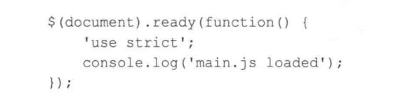
jQuery确保了所有的HTML文件都在JavaScript执行之前加载完成
运行js文件
js test.js
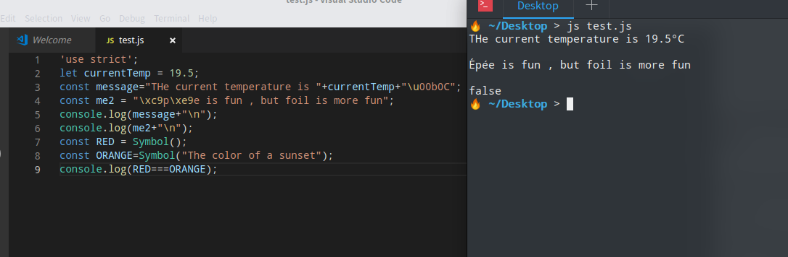
使用node
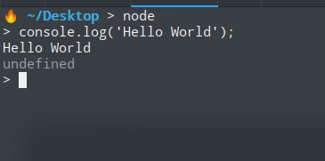
js注释
单行注释：//
多行注释：/*...*/
Html注释
被<!--和--> 所包围
变量类型
使用var声明的变量，其作用域为该语句所在的函数内，且存在变量提升现象；
使用let声明的变量，其作用域为该语句所在的代码块内，不存在变量提升；
使用const声明的是常量，在后面出现的代码中不能再修改该常量的值。
1 | Let currentTempC = 22; //degree Celsius |
Let声明变量，只能是使用一次
声明多个变量
Let targetTempC , room1 = “conference_room_a”, room2 = “lobby”
常量
const ROOM_TEMP_C = 21.5,MAX_TEMP_C=30;
NOTICe： 尽量使用常量，反正篡改数据
标识符命名
必须以字母、$、下划线(_)开头
必须是由字母、数字、$和下划线(_)组成
可以使用Unicode字符
不可以使用保留字
基本类型
数字、字符串、布尔、null、undefined、符号
对象
1 | Array、Date、RegExp、Map和WeakMap、Set和WeakSet |
Javascript识别四种类型数字字面量
数字
十进制、二进制、八进制、十六进制
1 | Let count = 10; |
即便count赋值为10，仍然为double型
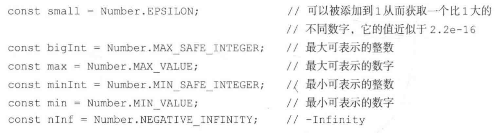
字符串
- 字符串在
javascript中表示Unicode文本。Unicode可以在任何语言中表示文本。 - Js中，单引号、双引号、或者重音符都可以表示字符串字面量。
特殊字符
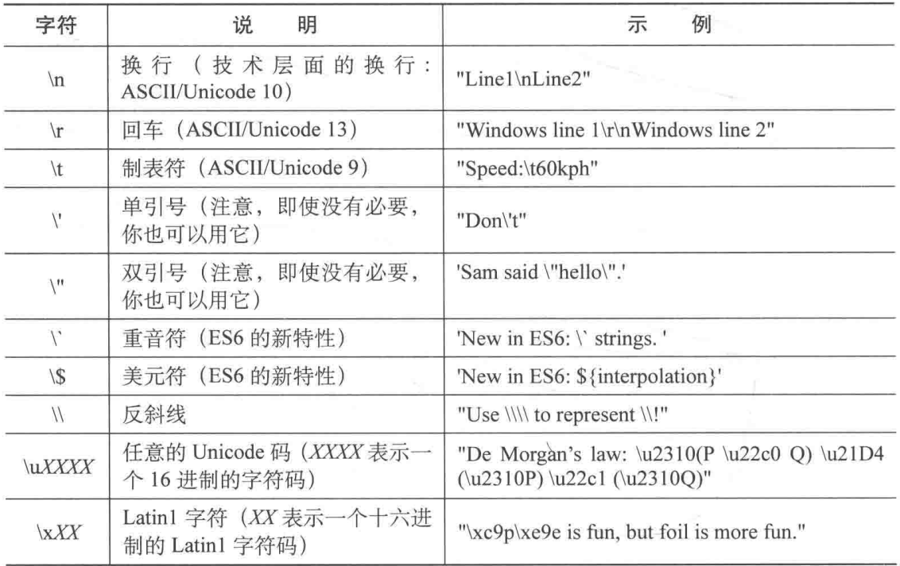
1 | 'use strict'; |
模板字符串
${xxxxx} 在字符串中形成拼接 类似还有 ‘+’
数字用作字符串
1 | Const result1 = 3+ ‘30’; // 330 |
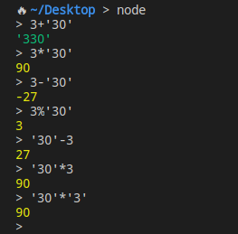
布尔型
1 | Let heating = true; |
符号
Symbol()构造方法可以用来创建符号。Symbol()函数会返回symbol类型的值，该类型具有静态属性和静态方法
代表一个唯一标志，符号一经创建就是独一无二的，类似于对象。
1 | Const RED = Symbol(); |
NULL和undefined区别
NULL表示没有值，undefined表示未被赋值。变量被创建未赋值，默认被定义为undefined。推荐使用NULL
对象
对象语法：大括号{}
NOTICE：不能使用关键字new创建一个符号
DEMO：const obj={}; //空对象
对象内容
使用属性
1
2obj.size; //undefined
obj.color; //”yellow”计算机成员访问符
1
2
3obj[“not and identifier”]=3;
obj[“not and identifier”]; // 3
obj[“color”]=’yellow’; //yellowSymbol()
1
2
3const SIZE = Symbol();
obj[SIZE]=8;
obj[SIZE];创建对象并初始化属性
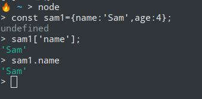
在大括号内部，属性用逗号间隔，属性名和属性值用冒号隔开。
1 | const sam1={ |
对象添加函数
sam3.speak=function(){return “Meow!”;};
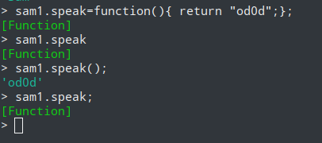
删除对象
1 | delete sam3.classification: //整个classification树被移除 |
Number,String和Boolean对象
数字、字符串和布尔型都有对应的对象类型。一是存储特殊值，二是以函数的形式提供某些功能。
1 | const s = “hello”; |
事实上，s是字符串类型，在调用方法或属性临时的创建一个string对象。一旦这个函数被调用了，该临时对象就会被删除。
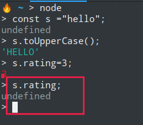
数组
- 数组长度不固定，可以随时添加和删除元素u
- 数组中元素的类型是多样的，每个元素都可以是任意类型。
- 数组下标从0开始
表示方法
1 | const a1=[1,2,3]; |
日期
创建当前时间日期
1 | > const now= new Date(); |
创建指定日期时间
1 | > const halloween = new Date(2016,9,31,19,0); |
常用方法
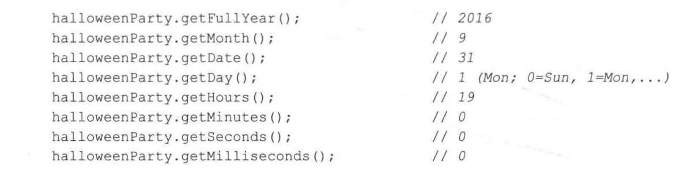
正则表达式
JavaScript中正则表达式通过RegExp对象来表达
1 | let regex = new RegExp("ab+c"); |
映像和集合
ES6引进Map和set,以及它们的“弱”引用类型WeakMap和WeakSet。映射也是一种对象，它将键和值关联映射在一起。集合类似于数组，但它不允许重复元素。
映射Map
1 | var map = new Map(); //映射，不重复的键，以键值对的形式存在 |
集合Set
1 | var set1 = new Set(["name1","name2","name3"]); //集合。不重复的元素集合，不存在键值对 |
数据类型转换
字符串转数值
第一种使用Number对象的构造方法：
1 | const numStr=”33.3”; |
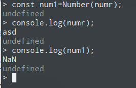
第二种方式使用内置函数parseInt和parseFloat
与Number不同，parseInt可以自己指定要转换成什么格式
1 | > const a = parseInt("16 volts",10); |
转换成字符串
1 | const n =33.5; |
转换成布尔型
1 | const n =0; |
总结：
- js有6中基本类型，字符串、数字、布尔、null、undefined,以及符号。
- 所有数字都是双精度浮点型
- 数组是特殊对象类型
- 日期、映射、集合和正则表达式都是特殊类型的对象。